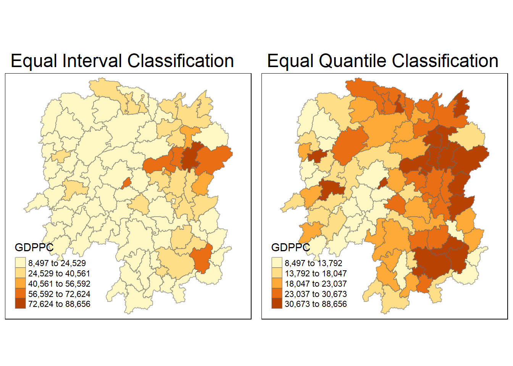
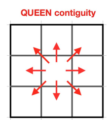

pacman::p_load(spdep, sf, tmap, tidyverse)Hands-on_Ex2_Global_Measures
Overview
The goal of this hands-on exercise is to compute Global and Local Measures of Spatial Autocorrelation (GLSA).
Getting Started
The Analytical Question
In spatial policy, one of the main development objectives of the local government and planners is to ensure equal distribution of development in the province.
Our task is to apply appropriate spatial statistical methods to discover if development are evenly distributed geographically.
If the answer is No, then our next question will be “is there a sign of spatial clustering?”.
- If the answer is Yes, then our next question will be “Where are the clusters?”.
In this case study, we are interested to examine the spatial pattern of a selected development indicator (i.e. GDP per capita) of Hunan Province, People’s Republic of China (PRC).
The Study Area and Data
Two data sets will be used:
- Hunan Province administrative boundary layer at county level. This is a geospatial dataset in ESRI shapefile format
- Hunan_2012.csv: This csv file contains selected Hunan’s local development indicators in 2012
Loading the Required Packages
We can use p_load() in the pacman package to load the required packages for data analysis: spdep (for spatial weights), sf, tmap, and tidyverse.
Getting the Data into R Environment
Import shapefile into R
st_read() can be used to import the Hunan shapefile into R as a simple features object.
hunan <- st_read(dsn = 'data/geospatial',
layer = 'Hunan')Reading layer `Hunan' from data source
`D:\phlong2023\ISSS624\Hands-on_Ex\Hands-on_Ex2\data\geospatial'
using driver `ESRI Shapefile'
Simple feature collection with 88 features and 7 fields
Geometry type: POLYGON
Dimension: XY
Bounding box: xmin: 108.7831 ymin: 24.6342 xmax: 114.2544 ymax: 30.12812
Geodetic CRS: WGS 84Import csv file into R
read_csv() can be used to import the Hunan_2012.csv into R.
hunan2012 <- read_csv('data/aspatial/Hunan_2012.csv')Performing Relational Join
left_join() can be used to join the attribute fields in hunan2012 with the hunan simple feature object.
Note
Note that left_join() automatically seeks out the shared column to join the data frames. However it can also by specified with the syntax: by = join_by(County)
hunan <- left_join(hunan, hunan2012) %>%
select(1:4, 7, 15)Visualizing Regional Development Indicator
The tmap package can be used to prepare choropleth maps to show the distribution of GDP per capita (GDPPC) according to different breaks style (‘equal’, ‘quantile’).
equal <- tm_shape(hunan)+
tm_fill('GDPPC',
n = 5,
style = 'equal')+
tm_borders(alpha = 0.5)+
tm_layout(main.title = 'Equal Interval Classification')
quantile <- tm_shape(hunan)+
tm_fill('GDPPC',
n = 5,
style = 'quantile')+
tm_borders(alpha = 0.5)+
tm_layout(main.title = 'Equal Quantile Classification')
tmap_arrange(equal, quantile, asp = 1, ncol = 2)
Global Spatial Autocorrelation
Computing Contiguity Spatial Weights
Before we can compute the global spatial autocorrelation statistics, we need to construct a spatial weights of the study area. The spatial weights is used to define the neighbourhood relationships between the geographical units in the study area.
poly2nb() is used to compute contiguity weight matrices for the study area. This function builds a neighbours list based on regions with contiguous boundaries. For this case study, we will use a Queen contiguity criteria, which look like below.

wm_q <- poly2nb(hunan, queen = TRUE)
summary(wm_q)Neighbour list object:
Number of regions: 88
Number of nonzero links: 448
Percentage nonzero weights: 5.785124
Average number of links: 5.090909
Link number distribution:
1 2 3 4 5 6 7 8 9 11
2 2 12 16 24 14 11 4 2 1
2 least connected regions:
30 65 with 1 link
1 most connected region:
85 with 11 linksThe summary report above shows that there are 88 area units in Hunan. The most connected area unit has 11 neighbours (area 85). There are two area units with only 1 neighbour (30 and 65).
Row-standardized Weights Matrix
Next, we need to assign weights to each neighboring polygon.
In our case, each neighboring polygon will be assigned equal weight (style = ‘W’). This is accomplished by assigning 1/(#ofneighbors) to each neighboring county then summing the weighted income values.
While this is the most intuitive way to summarize the neighbors’ values, it has one drawback in that polygons along the edges of the study area will base their lagged values on fewer polygons, thus potentially over- or under-estimating the true nature of the spatial autocorrelation in the data.
rswm_q <- nb2listw(wm_q,
style = 'W',
zero.policy = TRUE)
rswm_qCharacteristics of weights list object:
Neighbour list object:
Number of regions: 88
Number of nonzero links: 448
Percentage nonzero weights: 5.785124
Average number of links: 5.090909
Weights style: W
Weights constants summary:
n nn S0 S1 S2
W 88 7744 88 37.86334 365.9147The input of nb2listw() must be an object of class nb. The syntax of the function has two major arguments:
- style: can take values ‘W’, ‘B’, ‘C’, ‘U’, ‘minmax’ and ‘S’. B is the classic binary coding, W is row standardized (sums over all links to n), C is globally standardized (sums over all links to n), U is equal to C divided by the number of neighbours (sums over all links to unity), while S is the variance-stabilizing coding scheme proposed by Tiefelsdorf et al. 1999, p. 167-168 (sums over all links to n).
- zero policy: if set to TRUE, weights vectors of zero length are inserted for regions without neighbour in the neighbours list. These will in turn generate lag values of zero, equivalent to the sum of products of the zero row t(rep(0, length=length(neighbours))) %*% x, for arbitrary numerical vector x of length length(neighbours). The spatially lagged value of x for the zero-neighbour region will then be zero, which may (or may not) be a sensible choice.
Global Spatial Autocorrelation: Moran’s I
Moran’s I test
moran.test() in spdep can be used to perform Moran’s I statistical test
moran.test(hunan$GDPPC,
listw = rswm_q,
zero.policy = TRUE,
na.action = na.omit)
Moran I test under randomisation
data: hunan$GDPPC
weights: rswm_q
Moran I statistic standard deviate = 4.7351, p-value = 1.095e-06
alternative hypothesis: greater
sample estimates:
Moran I statistic Expectation Variance
0.300749970 -0.011494253 0.004348351 Question: What statistical conclusion can you draw from the output above?
Answer: As the p-value is below the alpha level of 5%, the result of the Moran’s I test is statistically significant and since the Moran I statistics is positive, we can conclude that there is positive spatial autocorrelation, or that similar values are spatially clustered.
Monte Carlo Moran’s I
moran.mc() can be used to performs permutation test for Moran’s I statistic. A total of 1000 simulation will be performed.
set.seed(1234)
bperm <- moran.mc(hunan$GDPPC,
listw = rswm_q,
nsim = 999,
zero.policy = TRUE,
na.action = na.omit)
bperm
Monte-Carlo simulation of Moran I
data: hunan$GDPPC
weights: rswm_q
number of simulations + 1: 1000
statistic = 0.30075, observed rank = 1000, p-value = 0.001
alternative hypothesis: greaterQuestion: What statistical conclusion can you draw from the output above?
Answer: The permutation test supports the result of the Moran’s I. As the p-value is 0.001, only 0.1% of the values equal or exceed it, the result of the Moran’s I test is statistically significant and since the Moran I statistics is positive, we can conclude that there is positive spatial autocorrelation, or that similar values are spatially clustered.
Visualizing Monte Carlo Moran’s I
It is good practice to examine the simulated Moran’s I test statistics in greater detail. This can be achieved by plotting the distribution of the statistical values as a histogram.
mean() can be used to get the mean of the simulated values of statistic.
mean(bperm$res[1:999])[1] -0.01504572var() can be used to get the variance of the simulated values of statistic.
var(bperm$res[1:999])[1] 0.004371574summary() can be used to get the summary statistics of the simulated values of statistic.
summary(bperm$res[1:999]) Min. 1st Qu. Median Mean 3rd Qu. Max.
-0.18339 -0.06168 -0.02125 -0.01505 0.02611 0.27593 hist() and abline() can be used to create a histogram of the simulated values of statistic of the Monte Carlo Moran’s I
hist(bperm$res,
freq = TRUE,
breaks = 20,
xlab = "Simulated Moran's I")
abline(v=0,
col='red')
Question: What statistical observation can you draw from the output above?
Answer: It can be seen that that a very small number of values exceed or equal the value of I at 0.3, meaning that the autocorrelation is statistically significant. Additionally, since the simulated values of statistic is not normally distributed, it demonstrates the reliability of the permutation test to identify statistically significant autocorrelation.
Global Spatial Autocorrelation: Geary’s
Geary’s C test
geary.test() can be used to perform Geary’s C test for spatial autocorrelation.
geary.test(hunan$GDPPC, listw = rswm_q)
Geary C test under randomisation
data: hunan$GDPPC
weights: rswm_q
Geary C statistic standard deviate = 3.6108, p-value = 0.0001526
alternative hypothesis: Expectation greater than statistic
sample estimates:
Geary C statistic Expectation Variance
0.6907223 1.0000000 0.0073364 Question: What statistical conclusion can you draw from the output above?
Answer: Geary’s C value ranges from 0 to 2 where 1 is no spatial autocorrelation. Since the statistic is 0.69, it suggests that there is slight positive spatial correlation. Additionally since the p-value is very small, the result is statistically significant.
Computing Monte Carlo Geary’s C
A permutation test (Monte Carlo Geary’s C) can be performed using geary.mc()
set.seed(1234)
bperm <- geary.mc(hunan$GDPPC,
listw = rswm_q,
nsim = 999)
bperm
Monte-Carlo simulation of Geary C
data: hunan$GDPPC
weights: rswm_q
number of simulations + 1: 1000
statistic = 0.69072, observed rank = 1, p-value = 0.001
alternative hypothesis: greaterQuestion: What statistical conclusion can you draw from the output above?
Answer: The permutation test supports the result of the Geary’s C test. Since p-value is 0.001, the result is statistically significant. Furthermore, as the test statistic is 0.69, it can be concluded that there is positive spatial autocorrelation.
Visualizing the Monte Carlo Geary’s C
mean() can be used to get the mean of the simulated values of statistic.
mean(bperm$res[1:999])[1] 1.004402var() can be used to get the variance of the simulated values of statistic.
var(bperm$res[1:999])[1] 0.007436493summary() can be used to get the summary statistic of the simulated values of statistic.
summary(bperm$res[1:999]) Min. 1st Qu. Median Mean 3rd Qu. Max.
0.7142 0.9502 1.0052 1.0044 1.0595 1.2722 hist() and abline() can be used to create a histogram of the simulated values of statistic of the Geary’s C.
hist(bperm$res,
freq = TRUE,
breaks = 20,
xlab = 'Simulated Geary C')
abline(v=1, col='red')
Question: What statistical observation can you draw from the output?
Answer: The simulated values is normally distributed around 1, which is one of the implicit assumption of the Geary’s C test.
Spatial Correlogram
Spatial correlograms are great to examine patterns of spatial autocorrelation in the data or model residuals.
They show how correlated are pairs of spatial observations when you increase the distance (lag) between them. They are plots of some index of autocorrelation (Moran’s I or Geary’s C) against distance.
Although correlograms are not as fundamental as variograms (a keystone concept of geostatistic), they are very useful as an exploratory and descriptive tool. For this purpose, they actually provide richer information than variograms.
Compute Moran’s I Correlogram
sp.correlogram() can be used to compute a 6-lag spatial correlogram of GDPPC. The global spatial autocorrelation used is Moran’s I. plot() is then used to plot the output.
MI_corr <- sp.correlogram(wm_q,
hunan$GDPPC,
order = 6,
method = 'I', style = 'W')
plot(MI_corr)
Plotting the output might not allow us to provide complete interpretation. This is because not all autocorrelation values are statistically significant. Hence, it is important for us to examine the full analysis report by printing out the analysis results as in the code chunk below.
print(MI_corr)Spatial correlogram for hunan$GDPPC
method: Moran's I
estimate expectation variance standard deviate Pr(I) two sided
1 (88) 0.3007500 -0.0114943 0.0043484 4.7351 2.189e-06 ***
2 (88) 0.2060084 -0.0114943 0.0020962 4.7505 2.029e-06 ***
3 (88) 0.0668273 -0.0114943 0.0014602 2.0496 0.040400 *
4 (88) 0.0299470 -0.0114943 0.0011717 1.2107 0.226015
5 (88) -0.1530471 -0.0114943 0.0012440 -4.0134 5.984e-05 ***
6 (88) -0.1187070 -0.0114943 0.0016791 -2.6164 0.008886 **
---
Signif. codes: 0 '***' 0.001 '**' 0.01 '*' 0.05 '.' 0.1 ' ' 1Question: What statistical observation can you draw from the plot above?
Answer: All pairs of results are statistically significant, except for number 4 with a p-value larger than 0.05. This shows that the list of IDs in number 4 do not exhibit spatial autocorrelation with their neighbors.
Compute Geary’s C correlogram and plot
sp.correlogram() can be used to compute a 6-lag spatial correlogram of GDPPC. The global spatial autocorrelation used is Geary’s C. plot() is then used to plot the output.
GC_corr <- sp.correlogram(wm_q,
hunan$GDPPC,
order = 6,
method = 'C', style = 'W')
plot(GC_corr)
We will print out the analysis report using print().
print(GC_corr)Spatial correlogram for hunan$GDPPC
method: Geary's C
estimate expectation variance standard deviate Pr(I) two sided
1 (88) 0.6907223 1.0000000 0.0073364 -3.6108 0.0003052 ***
2 (88) 0.7630197 1.0000000 0.0049126 -3.3811 0.0007220 ***
3 (88) 0.9397299 1.0000000 0.0049005 -0.8610 0.3892612
4 (88) 1.0098462 1.0000000 0.0039631 0.1564 0.8757128
5 (88) 1.2008204 1.0000000 0.0035568 3.3673 0.0007592 ***
6 (88) 1.0773386 1.0000000 0.0058042 1.0151 0.3100407
---
Signif. codes: 0 '***' 0.001 '**' 0.01 '*' 0.05 '.' 0.1 ' ' 1